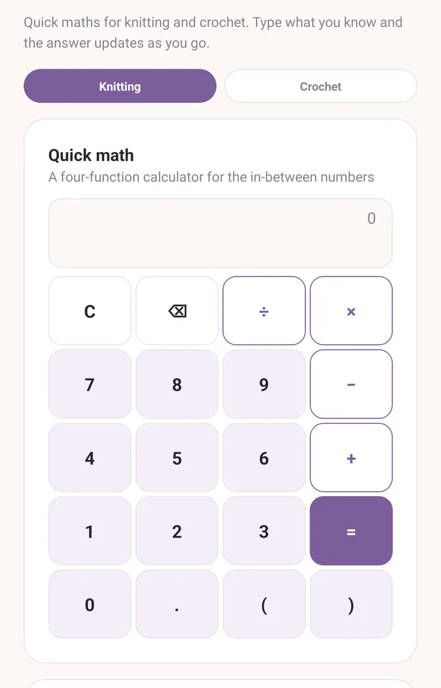
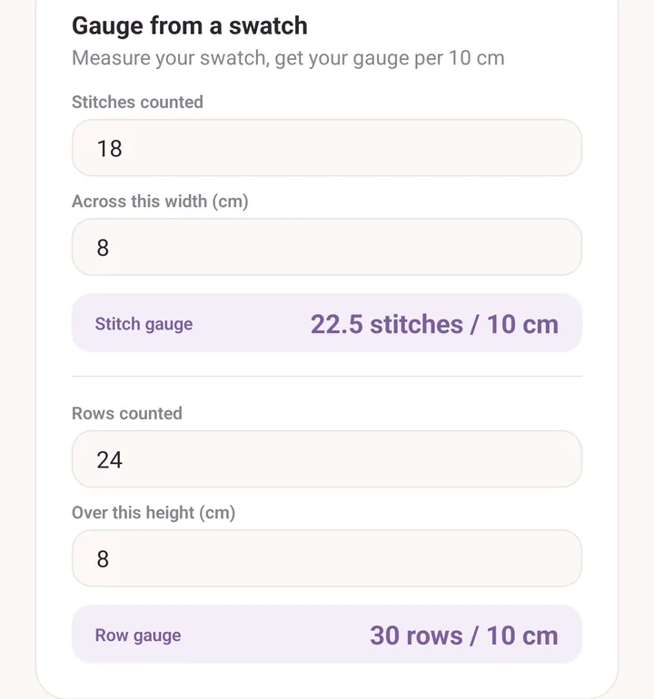
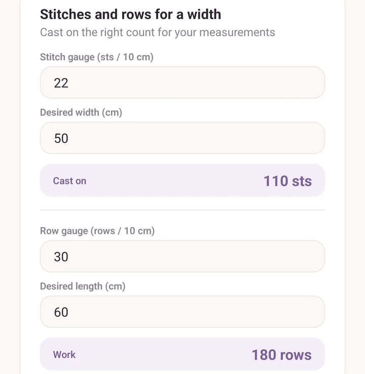
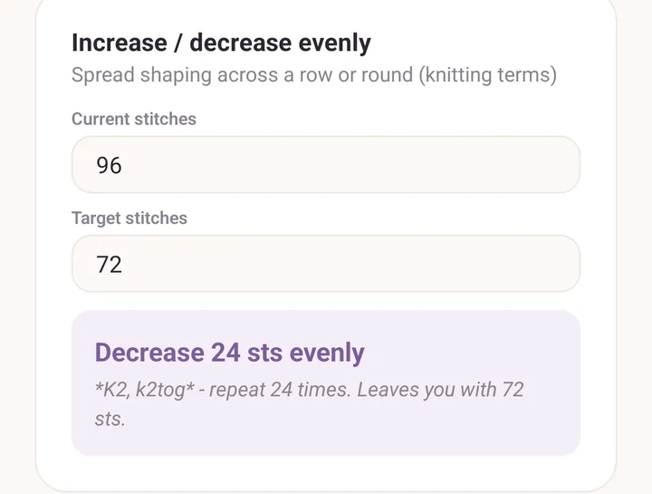

Calculator
Six small tools on one scrolling screen, and a ruler. Type what you know and the answer appears underneath as you go. There is no Calculate button and nothing to clear: fill in the one card you need and ignore the rest.
On this page 10
Opening it
- More, then Craft calculator in the Tools section.
- The Calculator tool in the PDF viewer's tool fan, so you can work out a number without leaving the pattern.
- The calculator icon in the pattern reader header.
- Use in calculator on a project's gauge row. That one opens with the gauge you recorded already filled in.
Whichever way you come in, it is the same screen.

Knitting or crochet
At the top, Knitting and Crochet. It starts on your default craft, set in Settings.
The choice changes the wording in two places: Gauge from a swatch asks for stitches or for stitches worked as sc or dc, and Increase / decrease evenly writes its answer in knitting terms or in crochet terms.
The calculator works in centimetres, and in metres for yarn lengths.
Quick math
A four-function calculator with brackets, for the in-between sums ("3 skeins at 175 m"). It handles plus, minus, times, divide, decimals and negative numbers. There are no scientific functions.
Gauge from a swatch
You knitted a swatch. This turns it into a gauge per 10 cm.
- Stitches counted, and Across this width (cm).
- Rows counted, and Over this height (cm).
You get Stitch gauge and Row gauge, each per 10 cm. The two halves are independent, so you can fill in one and leave the other empty.
Measure over as wide a piece of the swatch as you can. Counting 18 stitches over 8 cm gives a truer figure than counting 5 over 2 cm.

Stitches and rows for a width
The one most people want first: how many stitches do I cast on to get the width I want?
- Stitch gauge (sts / 10 cm) and Desired width (cm) give you Cast on.
- Row gauge (rows / 10 cm) and Desired length (cm) give you Work, in rows.

Adjust a pattern to your gauge
For when the pattern's tension is not yours, and you want the pattern's finished size anyway.
- Pattern stitch count, the number the pattern tells you to cast on.
- Pattern gauge (sts / 10 cm).
- Your gauge (sts / 10 cm).
You get Cast on instead, plus a note saying what width that keeps.
Increase / decrease evenly
You have a stitch count and you need a different one, spread evenly across a row or round.
Current stitches.
Target stitches.
Flat or In the round. A flat row reads the same from both edges. Tick Half a gap at each edge for a piece you will sew to another: the seam takes the other half.
The answer comes out as steps you can work straight from, one line each, in the terms of the craft you picked at the top, for example "K7, M1 repeat 6 times". In Norwegian the steps use Norwegian terms ("strikk 7, øk 1, gjenta 6 ganger"). Where the gaps do not divide evenly, the longer and shorter gaps are spread out, never piled at one end.
Tap a step when you have worked it. A step that repeats has a minus and a plus to count the repeats, and the line under the steps counts the stitches worked so far. Start over clears the ticks.
If the change will not fit across the stitches you have, it says so rather than giving you a number that cannot be worked.

Skeins needed
- Total length needed (m), from the pattern.
- Length per skein (m), from the ball band.
You get Buy, rounded up, with a reminder to grab an extra if the dye lot matters. For a jumper in a single colour, one spare ball is cheap insurance; matching a dye lot later usually is not possible.
If your yarn knits to another gauge than the pattern's, open Your yarn knits to another gauge? and put in both gauges, in stitches per 10 cm. The length is scaled to your gauge before the skeins are counted: a pattern of 1000 m at 22 stitches needs about 1182 m at 26. It is an estimate, so buy a skein extra if unsure.
Ruler
The Ruler tile at the top of the calculator opens a ruler at true size, in centimetres or inches. The clock hides and the scale runs down the whole long side of the screen from its top edge, with a second scale across under the camera and graph paper behind both, so you can lay a thing anywhere and read it. The gear sets the case edge and the scale; Measure a swatch lays the gauge box on the same graph paper, and Ruler only takes it away again. Measure the swatch on the screen under Gauge from a swatch opens the ruler with the box already there.
- The first time on a screen Purl does not know, it shows the outline of a bank card. Lay a card on it and make the outline bigger or smaller until they match, then Save. On a screen Purl knows, the ruler is ready at once, and Check the scale lets you confirm it.
- If your case raises the edge of the screen, set Case edge so the ruler starts where the screen does.
The box on the ruler is for a gauge check. Lay your swatch flat over it. A light band on each scale shows the span to count. Tap the button on the top scale for the stitches across, and the one on the left scale for the rows down: minus and plus fix a count, or tap the number to type it. The gauge per 10 cm appears in the bar at the bottom. Use fills Gauge from a swatch with it, and Save stores it as a project's gauge. Pull the bar up, or tap its handle, for Case edge and Check the scale.
Under the result, a second row holds cm and in, Ruler only, and a button that names the other size: 10 cm on the 5 cm box, 5 cm on the 10 cm one (4 or 2 in). Tap it to switch; the ruler remembers your choice. On an iPad 10 cm is a square like the 5 cm box. A phone is not 10 cm wide, so there the 10 cm box runs down the long side, and both counts go down the left scale: count the rows with the swatch the right way up, then turn it a quarter and count the stitches down the same box. A phone too short for 10 cm keeps the small box and shows no switch.
The scale stays on this device. It is not part of a backup, because another screen measures differently.
See also
- Projects: recording your actual gauge, and the Use in calculator shortcut.
- PDF tools: the calculator inside the tool fan.
- Yarn stash: what a ball band tells you.